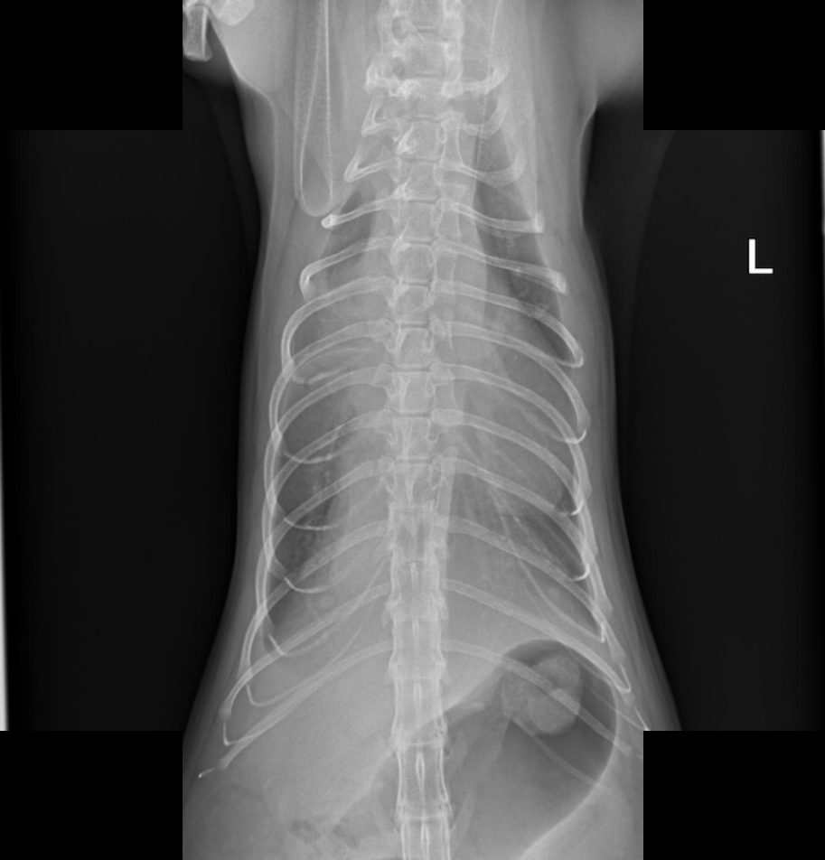
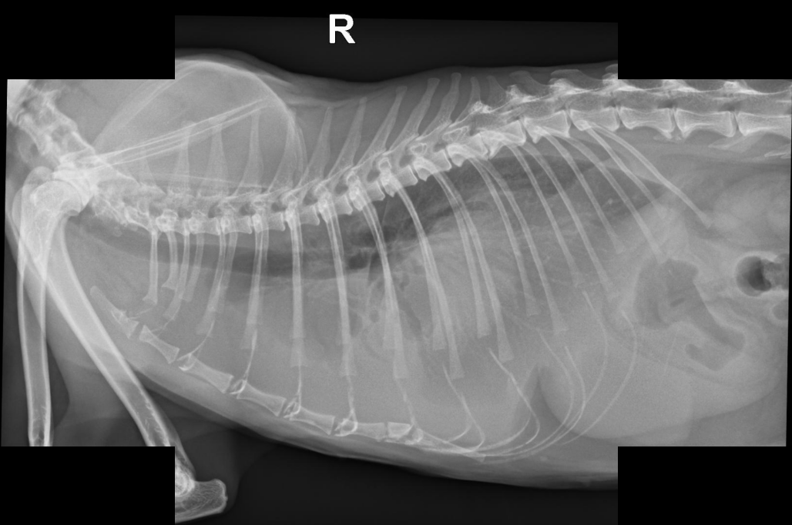
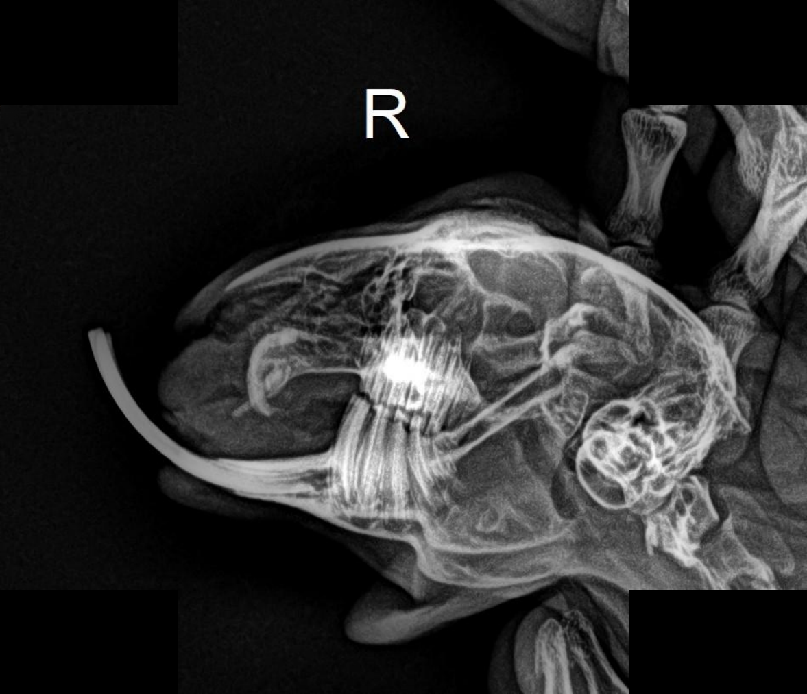
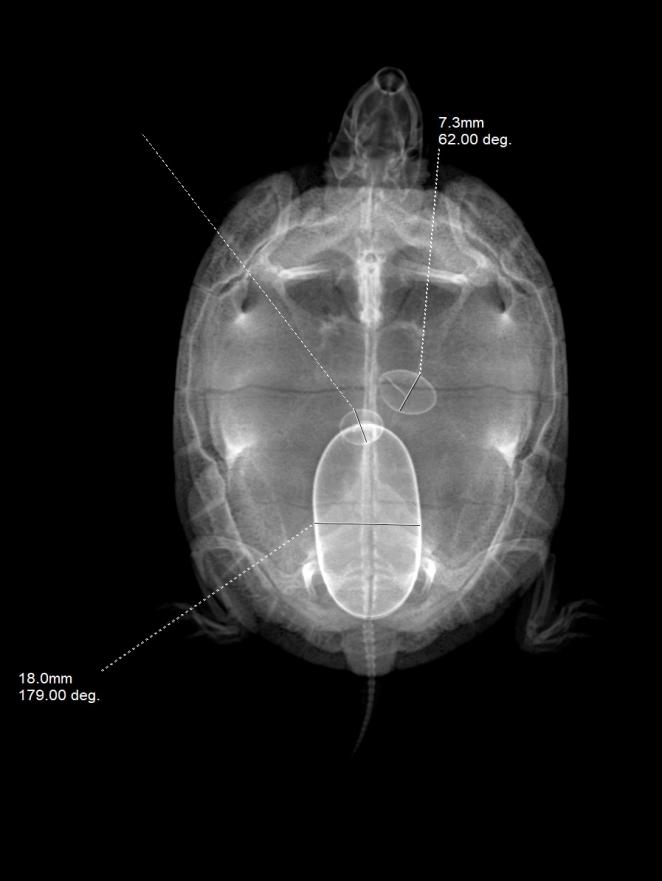
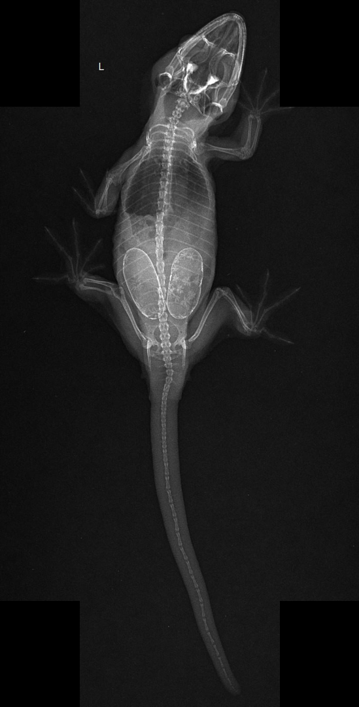
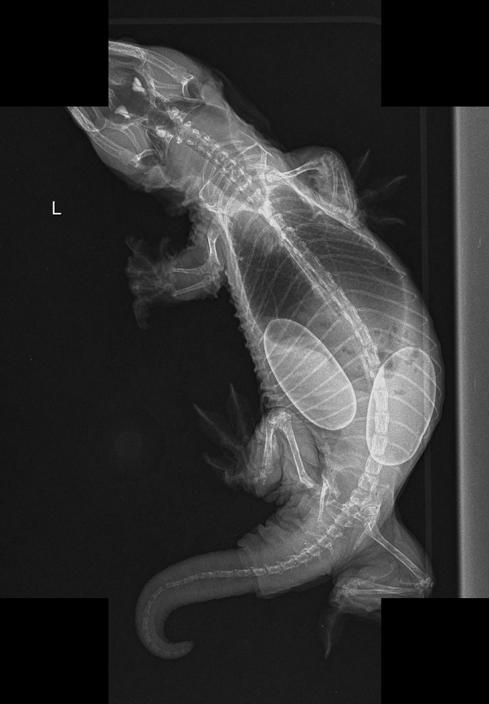
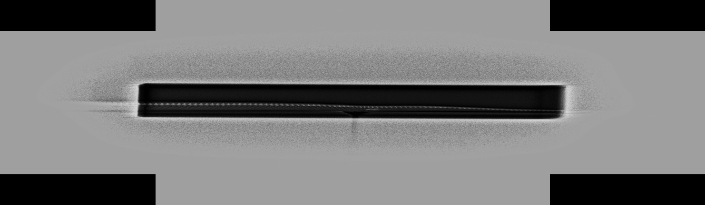
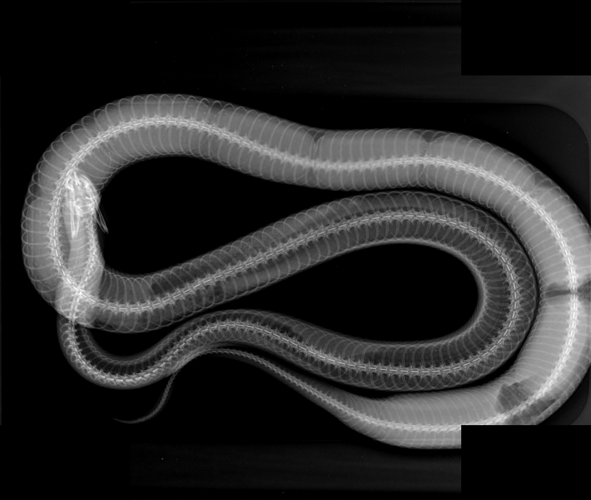
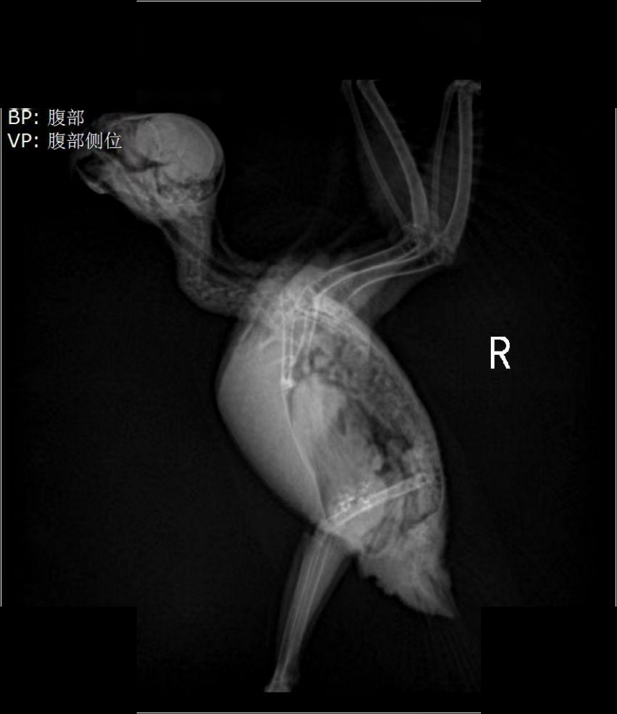

A selection of radiographic studies interpreted by our specialists — from routine musculoskeletal to complex exotic cases.

X-RayThoracic radiographs demonstrating displacement of abdominal viscera into the thoracic cavity.

X-RayMediastinal widening with concurrent pleural effusion on thoracic radiographs.

X-RayElongation and curvature of the incisor roots with secondary malocclusion.

X-RayVentrodorsal projection showing retained eggs within the coelomic cavity.

X-RayStudy demonstrating egg retention with incompletely mineralized calcium sacs.

X-RayCoelomic study with focal findings consistent with hypocalcemia-related dystocia.

X-RayRadiographic evidence of dystrophic calcification in the hemipenis.

X-RayWhole-body study showing multiple retained eggs distributed along the coelomic cavity.

X-RayLateral coelomic projection assessing abdominal organ silhouette and contour.
Request a complete sample report and we’ll email it to you.